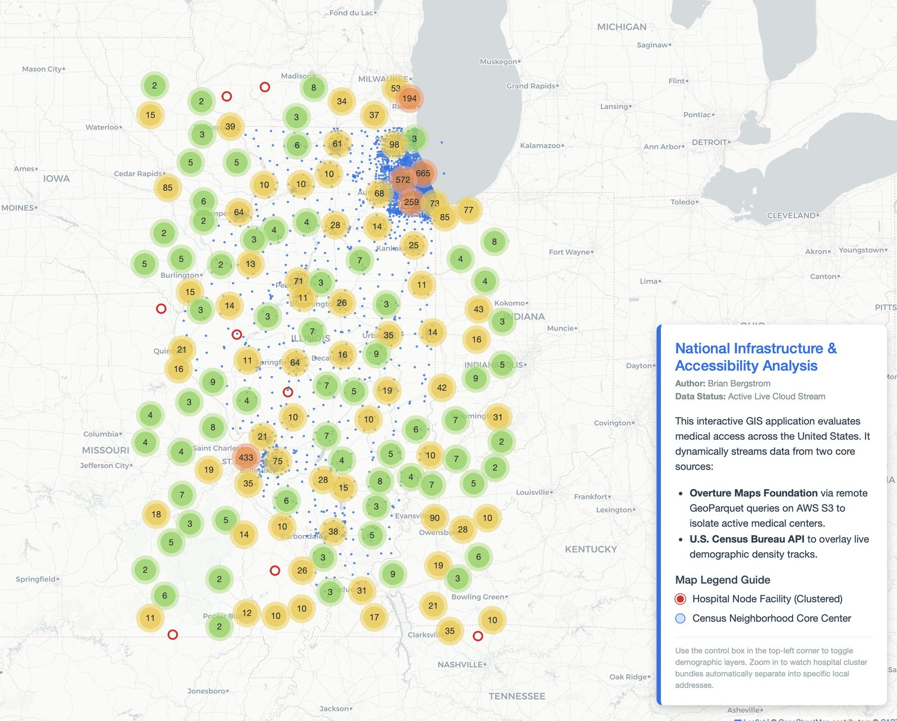

Hospital Accessibility Analysis
A dashboard analyzing healthcare accessibility across Illinois, built on live cloud-native geospatial data rather than a static extract.

This is the most technically ambitious thing I've built during my independent study. It streams live Overture Maps GeoParquet data straight from AWS S3 — rather than working from a downloaded, aging extract — and combines it with the U.S. Census API in real time to analyze how healthcare access lines up against demographics.
Illinois-focused, not "national"
I want to be straightforward about scope here: the intent was always Illinois. The dashboard shows data for other states too, but that's incidental — Overture Maps and Census data are both national datasets, and I haven't filtered them down. It wasn't a deliberate design choice to go national, and I'd rather say that plainly than oversell it.
How it's held up
I posted this on LinkedIn without expecting much, and it's gotten real, specific feedback from people in the field — a GIS data consultant flagged the clustering technique as worth borrowing, and a startup founder told me it directly shaped ideas for his own product. That kind of validation matters more to me than any metric I could put on the dashboard itself.
This app is first in line to migrate from its current home at dulcetgis.com over to my permanent domain, bergstromgis.com — driven by that outside validation, not just personal preference.
Live and streaming real data right now.
View the dashboard (opens in a new tab) View the code (opens in a new tab)Let's talk about a job, a project, or both.
I'm open to full-time GIS Analyst roles and freelance/consulting work.